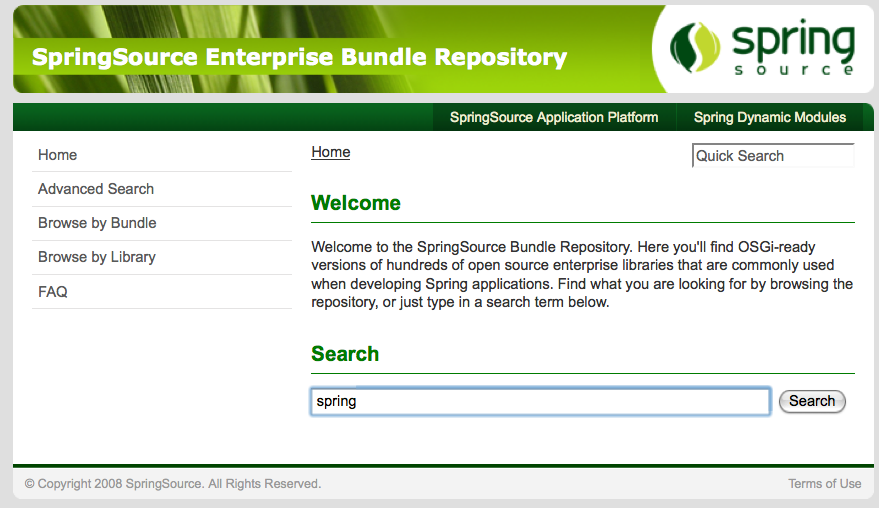

The SpringSource Enterprise Bundle Repository is a public collection of open source libraries commonly used for developing enterprise Java applications with the Spring Framework and Virgo. It contains hundreds of the most popular enterprise Java libraries made available for general use in an OSGi-ready format. You can browse the collection and then download the bundles that you need into your own local repository.
The SpringSource Enterprise Bundle Repository is located here.

You can find bundles in the repository using a number of options. You use the ‘Search’ facility by typing in a keyword. The matching criteria returned can be explored by name, symbolic name, class, package or resource.
There is also the option of clicking on ‘Browse by Bundle’. This gives an alphabetical list of bundles. You can select the desired bundle to see details and find the download link. Finally, you can also choose to ‘Browse by Library’, which allows you to browse the alphabetical list of libraries in the repository.